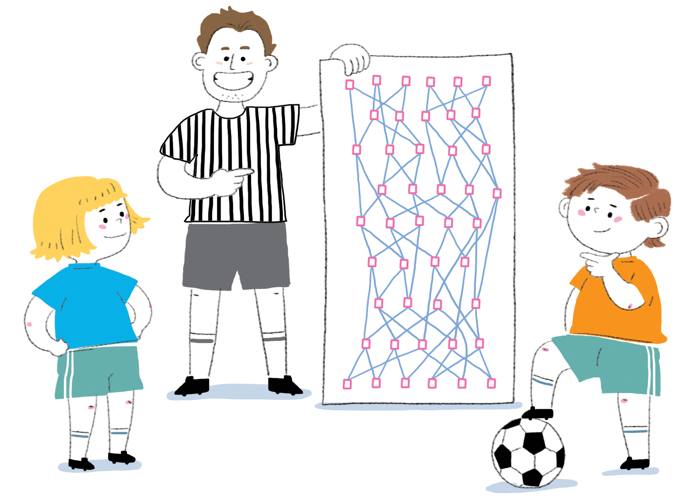
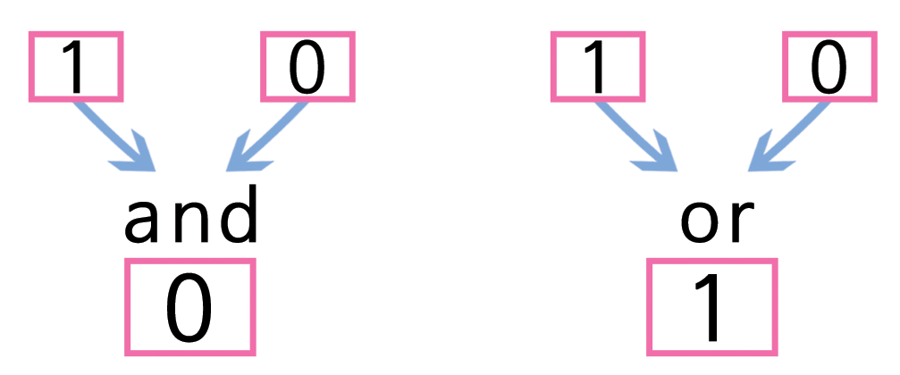
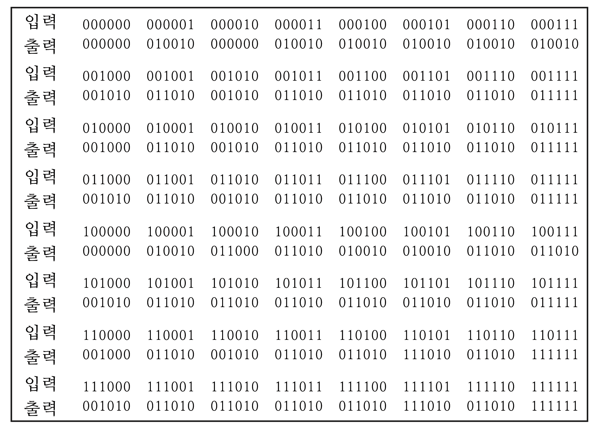
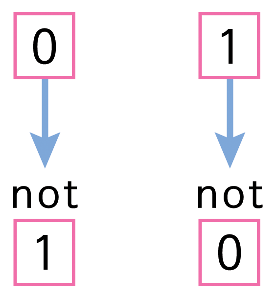
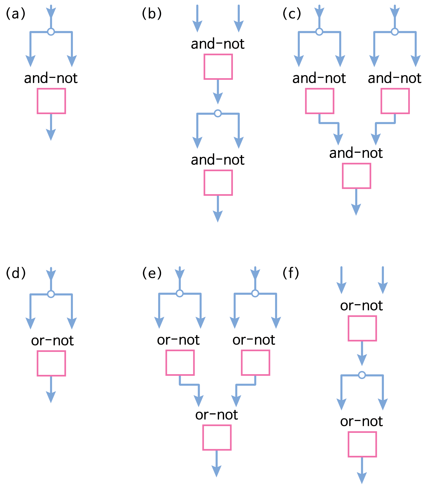
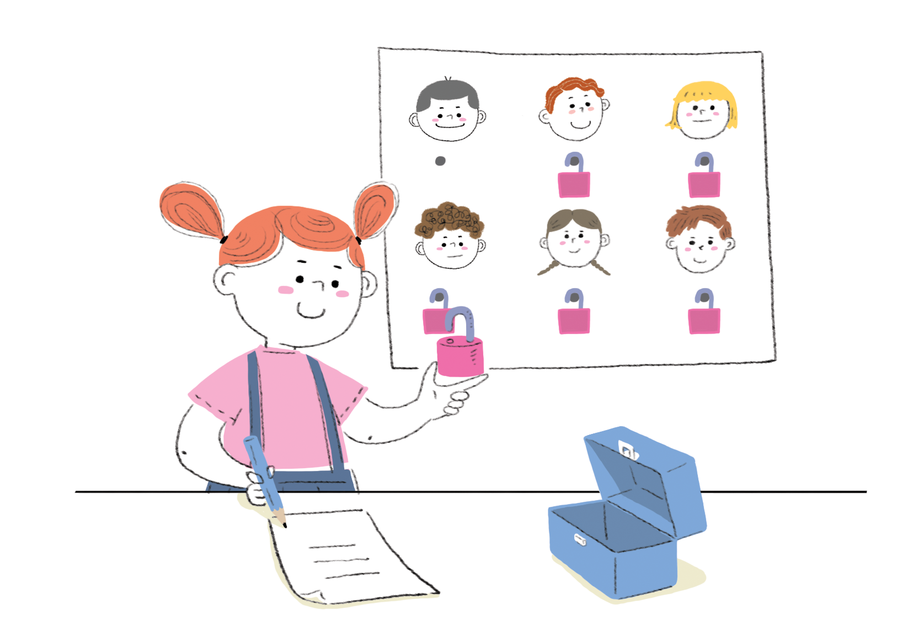

Chapter 5 제 5 부
비밀 공유와 범죄와 전쟁 — 암호화(Cryptography)
- 비밀 공유 — 정보 은닉 프로토콜(Information hiding protocols)
- 페루 동전 던지기 — 암호화 프로토콜(Cryptographic protocols)
- 키드 크립토 — 공개키 암호화(Public-key encryption)
비밀 공유와 범죄와 전쟁
메시지를 교환하려고 암호 코드 혹은 눈에 보이지 않는 글을 작성하는 마술을 사용하는 스파이나 비밀요원을 들어봤을 것이다. 비밀 코드를 작성하고 해독하는 기술로서 암호학(cryptography)이라는 주제가 시작한 방식이 된다. 제2차 세계대전에서 영국은 특별한 용도로 암호를 해독하는 전자기계를 만들어서 군사 암호를 해독하는데 사용했다. 그리고 나서 컴퓨터가 나왔고, 모든 것을 바꿨으며, 암호학은 새로운 시대로 들어섰다. 과거에 상상할 수 없는 엄청난 계산량을 사용해서 코드를 해독하는데 투여됐다.
사람들이 컴퓨터를 서로 공유하기 시작했을 때, 비밀 암호에 대한 새로운 용도가 있었다. 컴퓨터가 네트워크에 연결되었을 때, 정보에 접속하려는 사람으로부터 정보를 보호하려는 새로운 이유가 있었다. 전자우편이 전달되었을 때, 전자우편을 서명해서 보낸 사람이 정말 글을 써 보낸 사람이 맞는 확실히 하는 것이 중요하게 되었다. 이제는 사람들이 컴퓨터를 사용해서 물건을 팔고 사고하기 때문에, 주문하고 컴퓨터 네트워크로 지불하는 안전한 방법이 필요하게 되었다. 컴퓨터 시스템을 공격하는 점증하는 테러리스트 위협으로부터 컴퓨터 보안을 확보하는 것이 더욱 중요해졌다.
암화화하면 아마도 비밀번호를 컴퓨터에 저장하고 메시지 내부 문자를 마구 뒤섞어서 해커나 적이 읽을 수 없게 하는 것을 머리속에 그릴 것이다. 하지만 현실은 매우 다르다. 현대 컴퓨터 시스템은 비밀번호를 서버에 저장하지 않는다. 왜냐하면, 만약 저장했다가, 누군가 시스템 서버에 접근해서 모든 보안장벽을 뚫어버릴 수 있기 때문이다. 이러한 경우 해킹결과는 거의 재앙수준이 된다: 위조된 은행계좌로 송금하거나, 다른 누군가를 가정해서 메시지를 전송하거나, 누군가의 비밀 파일을 열어보거나, 군대에게 명령을 내리거나, 정부기능을 마비시킬 수도 있다. 근래는 활동 14에서 언급한 일방향 함수(one-way function)를 사용해서 비밀번호를 다룬다. 그리고 암호화는 단순히 메시지 문자를 뒤섞는 순준이 아니다: 4부에서 소개한 “다루기 힘든(intractable)” 것과 같이 정말 매우 어려운 문제가 포함된 기법을 실무에 적용한다.
암호화 기법을 사용해서, 여러분이 생각하기에 불가능하다고 여기는 것들을 수행할 것이다. 이번 장에서, 나이가 몇살이지 묻지 않고, 그룹에 있는 사람들의 평균 나이를 계산하는 간단한 방법을 찾아낼 것이다. 서로 신뢰하지 않는 두 사람이 동전을 던져서 결과에 동의하는 방법도 알아낼 것이다. 두 사람은 사실 다른 도시에 살고 있으며, 둘다 동전 던지는 것도 볼 수도 없다. 마지막으로, 모든 사람이 암호해독하는 방법은 알고 있지만, 단지 한사람만이 해독할 수 있도록 비밀 메시지를 암호화하는 방법도 찾아낼 것이다.
선생님에게
이번 활동들은 실습을 통해서 현대 암호기법을 학습하는데, 사람들 대부분이 비밀성과 컴퓨터에 대해 추측하는 것과는 매우 다르다.
두개의 핵심 아이디어가 있다. 첫번째는 프로토콜(protocol) 개념으로, 격식을 차린 처리 규약이다. 프로토콜하면 외교, 에티켓을 떠올릴 수 있지만, 컴퓨터도 마찬가지로 프로토콜을 사용한다. 놀랍도록 단순한 프로토콜을 사용해서 겉으로 보면 어려운 작업을 수행한다. 몇분정도 소요되는 활동 16을 통해서 한 그룹의 사람들이 협업을 통해서 그룹의 평균 연령(혹은 수입)을 쉽게 계산할 수 있는데, 사람들마다 나이(혹은 수입)를 파악할 필요가 없다. 컴퓨터를 통해서 다른 사람과 상호작용할 때, 컴퓨터적 복잡성(computational complexity)—난해성(intractability)—이 두번째 핵심 아이디어 역할을 한다. 활동 17을 통해서, 반듯이 서로 신뢰하지 않는 사람 둘이서 어떻게 동전 던지기 결과에 합의과정을 지켜보게 된다. 두 사람은 단지 전화선으로만 연결되어 있다. (이 활동을 통해서 작은 목소리로 부울 논리 회로와 다루는 법을 소개할 수도 있다.) 활동 18을 통해서, 학생들에게 컴퓨터 기법을 사용해서 메시지를 안전하게 암호화하는 방법을 시연한다. 하지만, 암호코드로 변환하는 방법은 공개된 정보다.
활동중 일부, 특히 마지막 활동은 매우 어렵다. 학생들에게 충분한 동기를 부여해서, 대부분의 사람들이 불가능하다고 생각하는 것을 수행하고, 결국 활동을 성공적으로 마무리할 것이라는 경이로운 느낌을 주입해야 한다. 이러한 경이로운 느낌을 생성하고, 의사소통하고, 나무를 보느냐고 전체 숲을 보지 못하면 안되기 때문에 종종 잠시 멈춰서 활동 전체 과정이 생동감있게 한다. 이 활동이 책에서 가장 도전적이며 기술적으로 난이도가 있다. 만약 학생들이 너무 어렵다고 판단된다면, 6부를 건너뛰어라. 6부는 완전히 다른 주제이고, 전혀 기술적이지 않다.
기술적 사고방식을 가진 분들에게
컴퓨터가 일상을 잠식하면서, 암호기법의 응용이 잠재적으로 다소 평향되어졌다. 대부분의 사람들은 현대 암호 프로토콜의 잠재적인 능력을 이해하지 못한다. 이것이 가져온 결과는 다음과 같다. 거대 기관—정부나 대기업—이 개인 정보가 포함된 시스템을 구축할 때, 정보가 다뤄지는 방법, 수집하려는 정보의 종류, 공개되는 정보, 공개정보 대상에 대한 주요한 결정은 테크노크라트(technocrat)가 결정하는 경향이 있다. 만약 현대 기술로 인해서 열려진 가능성에 대해서 좀더 잘 이해하게 된다면, 이런 의사결정과정이 있을 때 좀더 적극적으로 참여하게 되고, 사회는 다른 정보 인프라를 가지게 될 것이다.
정보 은닉 프로토콜, 암호 프로토콜, 공개키 암호화에 대한 학습 내용은 일반적으로 매우 고급과정으로 간주된다. 하지만, 아이디어 자체가 어려운 것은 아니다. 이해하기 어려운 것이 기술적인 부분이지, 근간을 이루는 개념은 아니다. 전자상거래와 관련된 실생활에서 기술적인 부분은 컴퓨터 소프트웨어 내부에 파묻혀있다. 컴퓨터 소프트웨어가 새로운 암호기법을 매우 사용하기 쉽게 만들었다. 하지만, 무슨 일이 진행되고 있는지에 대한 통찰하려면, 기저를 흐르는 아이디어를 이해하는 것도 중요하다.
암호 시스템은 정부에 매우 중요하다. 공식 커뮤니케이션을 안전하게 수행하기 위해서가 아니라, 마약밀매, 테러 같은 불법적인 활동과 연계된 사람들이 암호화된 커뮤니케이션을 사용할 수 있다는 우려 때문이다.만약 범죄관련된 사람들이 암호기법을 사용하게 되면, 암호를 해독하는 방법이 없다면 도청을 할 수 없다. 이러한 우려는 매우 큰 논란을 불러 일으켰다. 암호화 시스템을 제한하려는 법집행에 관심있는 사람들과 사적인 커뮤니케이션에 접근하는 정부를 지나친 간섭이라고 생각하는 시민 인권운동가 사이에 논란이 되고 있다. 한동안 미국정보는 암호관련 기술을 폭탄이나 총같은 군수품으로 간주해서 사용을 엄격히 제한했다. 즉, 올바른 정보와 기술적 능력을 만족시키는 경우에만 보안 커뮤니케이션 시스템을 구축할 수 있다. 하지만, 범죄자의 수중에 들어가면 위험하기는 마찬가지다. 클리퍼 칩(Clipper Chip)에 대한 광범위한 논쟁이 있었다. 참고로, 클러퍼 칩은 암호키 위탁(key escrow)으로 불리는 추가 비밀번호를 가진 시스템으로, 정부관계자가 칩으로 암호화된 어떤 메시지도 해독할 수 있다. FBI와 미 법무부는 이 칩을 커뮤티케이션에 광범위하게 사용하길 기대하지만, 개인정보에 대한 위협때문에 상당한 반대를 불러 일으켰다. 기술적으로 모든 종류의 보안 시스템은 가능하지만, 정치적으로 반듯이 수용될 수는 없다!
암호 아이디어는 메시지를 비밀스럽게 보관하는 것 외에 응용사례가 많다. 예를 들어, 메시지를 보냈다고 말하는 사람이 보낸 메시지가 맞는지 검증하는 것— 인증(authentication)이고, 이것이 없으면, 전자상거래는 불가능하다. 컴퓨터를 사용해서 투표하는 방식도 있다. 어떤 사람이 누구에게 표를 던지는지를 알지 못하게 해야하고, 심지어 컴퓨터 시스템을 운영하는 사람도 포함된다. 그리고 한번이상 투표를 하지 못하게도 만들어야 한다. 전화선을 통해서 카드게임을 할 수도 있다— 사업거래를 성사하는 것이 카드게임(포커)과 매우 유사하다는 것을 깨달을 때까지 바보스럽게 들릴지 모른다.
다음 일들은 불가능하게 보인다. 전화선 위로 카드를 어떻게 섞을 것인가? 만약 반대쪽의 상대방과는 경쟁을 하고 있고 신뢰를 할 수 없다면 말이다. 메시지를 가로채고, 변경하고, 원본으로 가장해서 전달하는 사람을 어떻게 잡아낼 것인가? 하지만, 만약 이러한 것을 할 수 없다면, 전자적으로 사업을 수행할 수 없다. 여러분이 매장 단말기와 은행 사이에 통신선을 가로채서 은행계좌에서 불법인출하려고 인증을 위조하려는 기술적 사고방식을 가진 범죄자를 막아야 한다. 거짓 주문 혹은 허위 계약을 만들어 내서 사업 경쟁자가 막대한 손실을 초래하는 것도 막아야 한다. 현대 암호기법으로 기적을 만들 수 있고 다음 활동이 방법을 보여준다.
암호와 암호해독에 관한 흥미로운 책이 많다. Hinsley와 Stripp이 편집한 Codebreakers: the inside story of Bletchley Park 책은 세계 2차 대전에서 첫 컴퓨터가 암호를 해독하는데 어떻게 사용되었고, 전쟁을 엄청나게 짧게 만들어 정말 많은 생명을 구했는지에 대한 첫번째 목격자 증언이 나와있다.
5.1 비밀 공유 - 정보 은닉 프로토콜
5.1 개요
암호 기법은 다른 사람과 정보를 공유하게 하지만, 놀랍도록 높은 개인정보 보호 수준을 유지한다. 이번 활동은 정보고 공유되지만, 어떤 정보도 누출되지 않는 상황을 시연한다: 그룹의 학생들이 평균 연령을 계산하는데 누구도 다른 사람에게 나이가 얼마인지 말하지 않고도 가능하다.
5.1 기술
- 연령 계산.
- 난수.
- 협업 작업.
5.1 나이
- 7세 이상
5.1 학습 교재
- 각 그룹 아이마다 필요한 것:
- 작은 종이 패드.
- 펜.
5.1.1 언플러그드 활동 동영상
| 한글 동영상 | 영어 동영상 |
|---|---|
| 애타게 찾고 있습니다. | 애타게 찾고 있습니다. |
5.1.2 비밀 공유

5.1.2.1 들어가며
이번 활동은 그룹의 학생들의 평균 연령을 찾아내는데 누구도 나이가 몇살인지 누설하면 안된다. 대안으로, 그룹에 있는 학생의 평균 수입(용돈)을 산출할 수도 있고, 혹은 비슷한 개인적인 정보도 가능하다. 특히, 이러한 통계치를 계산하는 것이 어른들에게 적합하다. 왜냐하면, 어른들이 좀더 나이, 수입 같은 정보에 민감하기 때문이다.
그룹에 최소 학생이 세명 필요하다.

5.1.2.2 토론
그룹 학생들에게 어느 누구도 다른 사람에게 자신의 나이를 말하지 않고 그룹 평균나이를 계산하는 활동을 진행한다고 설명한다.
함께 활동을 진행할 학생 6명에서 10명을 선정한다. 첫번째 학생에게 작은 종이패드와 펜을 나눠준다. 종이 위에 3자리 난수를 하나 골라 비밀스럽게 적게한다. 예제에서는 613이 난수로 선정됐다.
첫번째 학생에게 종이패드 첫짱을 떼어내고, 본인 나이를 난수에 더하게 한다. 그리고 종이패드 두번째 종이에 적는다. 첫번째 학생의 나이는 8세다. 그래서 두번째 종이는 621(613+8)이 된다. 떼어낸 종이를 잘 보관한다. (누구에게도 보여주지 않다.)
종이패드를 두번째 학생에게 전달한다. 본인 나이를 숫자에 더하고, 종이를 떼어내고, 다음 페이지에 총합을 적는다. 이번 예제에서, 두번째 학생의 나이는 10세다.
학생이 종이를 떼어내고 나이를 숫자에 더하는 과정을 계속해서, 모든 학생이 종이패드를 가질 때까지 계속한다.
종이패드를 첫번째 학생에게 돌려준다. 패드에 적힌 숫자에서 최초 난수를 학생이 뺀다. 이번 예제에서, 종이패드는 학생 5명에게 돌려줬고, 657이 최종 숫자고, 613이 최초 난수이며, 빼기를 하면 44가된다. 이 숫자가 모든 학생의 나이 총합이 되고, 평균은 총합을 학생수로 나누게 되면, 이 그룹 학생의 평균나이는 8.8세가 된다.
모든 학생이 종이패드를 파기하고, 두 학생이 공모하지 않는다면, 누구도 개인 나이를 계산할 수 없다는 점을 학생들에게 지적한다.
5.1.2.3 변형과 확장
이 시스템을 변형해서 비밀투표를 할 수 있다. 만약 찬성이면 1, 반대면 0으로 코딩하고 각 사람이 규칙에 따라 더하기 한다. 투표는 형평성을 잃게 되는데, 만약 어떤 사람이 1보다 큰 수(0보다 작은 수)를 더하게 되면, 모든 사람이 찬성을 던졌다고 가정하면 찬성 투표수가 사람 수보다 많게 되기 때문에 의혹을 불러 일으킬 위험이 있다.
5.1.3 컴퓨터 과학 핵심 개념
컴퓨터에는 많은 개인정보가 저장된다: 은행 잔고, 소셜 네트워크, 체납된 세금, 운전면허증 보유기간, 신용정보 이력, 시험 성적표, 의료기록 등. 개인정보는 매우 중요하다! 하지만, 다른 사람과 개인정보 정보 일부를 공유할 필요가 있다. 예를 들어, 은행 직불카드를 사용해서 매점에서 물건값을 계산할 때, 매점에서는 계좌잔고가 충분한지 검증할 필요가 있다는 것을 인식하고 있다.
종종 정말 필요한 것보다 더 많은 정보를 제공한다. 예를 들어, 상점에서 전자상거래를 한다면, 고객이 어느 은행과 거래하며, 계좌번호는 무엇이고, 이름이 무엇인지 상점에서 파악하게 된다. 조금더 나아가, 은행은 고객이 쇼핑하는 장소도 파악한다. 은행은 고객 프로파일을 만들어서, 주유는 어디서 하고, 식료품을 어디서 구입하며, 매번 쇼핑할 때 쇼핑항목별로 얼마를 지불하며, 언제 방문을 했는지도 파악하고 있다. 만약 현금으로 지불한다면, 어떤 정보도 알려지지 않는다. 대부분의 사람들은 공유되는 정보에 대해서 별로 걱정을 하지 않는다. 하지만, 잠재적인 오용 가능성은 충분한다: 타겟 마케팅 (예를 들어, 항공권 구입에 돈을 많이 쓰는 사람에게 여행광고 제공), 차별(은행이 부자 고객에게 고급 서비스를 제공), 심지어 협박(부적절한 거래를 폭로하겠다고 협박). 그밖의 다른 경우라면, 만약 누군가 여러분을 모니터링하고 있다고 생각한다면, 쇼핑하는 방식을 바꿀 수도 있다.
개인정보의 손실은 꽤 널리 받아들여진다. 하지만, 암호화 프로토콜이 존재해서 현금으로 거래하는 것과 같은 수준으로 개인정보 보호를 전자금융거래에서 가능하게 한다. 은행계좌에서 상점계좌로 돈이 이체되는데 어느 누구도 돈의 출처와 입금된 곳을 알지 못한다는 것을 믿기는 힘들다. 이번 활동은 그런 금융거래가 좀더 그럴듯하게 보이게 기획되었다: 양쪽 상황 모두 제한된 정보 공유만 포함하고, 좀더 똑똑한 프로토콜로 가능하게 만들었다.
5.1.3.1 추가 읽기
David Chaum이 저술한 도발적인 제목을 가진 Security without identification: transaction systems to make Big Brother obsolete. 논문이 이러한 이슈를 부각했다. 논문은 꽤 읽을만하고, “전자 캐쉬(electronic cash)”를 사용해서 완전히 개인정보가 보호되는 거래를 구현하는 방법을 포함하여 정보은닉 프로토콜 몇가지도 소개한다. 논문은 Communications of the ACM, October 1985에 실려있다.
5.2 페루 동전 던지기 - 암화화 프로토콜 (Cryptographic protocols)
5.2 개요
이번 활동은 간단하지만, 그럼에도 불구하고 거의 불가능해 보이는 작업을 성취하는 방법을 보여준다— 통신선으로 연결되어, 서로를 반듯이 신뢰하지 않는 두 사람 사이에서 동전을 던져 무작위로 공정한 결정을 하는 방법.
5.2 교과학습 연계
- 기술 레벨 1: 기술 시스템. 입력, 제어 변환, 출력으로 이루어진 기술 시스템을 이해한다.
5.2 기술
- 부울 로직(Boolean logic),
- 함수 (Functions),
- 퍼즐 풀기 (Puzzle solving).
5.2 나이
- 9세 이상
5.2 학습 교재
- 각 그룹 아이마다 필요한 것:
- 재현할 수 있는 워크쉬트 사본 페루 동전 던지기
- 서로 다른 두가지 색깔로 된 두 묶음 열두개 단추 혹은 게임용 패.
5.2.1 언플러그드 활동 동영상
| 한글 동영상 | 영어 동영상 |
|---|---|
| 애타게 찾고 있습니다. |
5.2.2 페루 동전 던지기

이진수 표현(활동 1, 점을 세다), 패러티 개념(활동 4, 카드 뒤집기 마술)을 배우고, 활동 14 관광 마을에 일방향 함수 사례를 봤다면, 학생들이 이번활동을 통해서 좀더 많은 것을 얻어갈 것이다.
5.2.2.1 들어가며
이번 활동은 저작자 중의 한명이 페루에 있는 학생과 함께 작업할 때 최초로 고안되었다. (본 활동 제목 이름이 유래된 연유) 지역적인 상황에 맞추어 스토리를 각색할 수 있다.
결승전을 치를 홈구장을 어디로 할지 페루 리마(Lima)와 쿠스코(Cuzco) 축구팀이 결정해야 한다. 가장 단순한 방법은 동전 던지기다. 하지만 두 도시가 너무 떨어져 있다. 그리고, 리마팀을 대표하는 알리시아(Alicia)와 쿠스코팀을 대표하는 베니토(Benito)는 동전 던지러 함께 모일 시간과 예산이 없다. 통신선을 통해서 동전 던지기를 할 수 있을까? 알리시아가 동전을 던지고, 베니토가 동전 앞면 혹은 뒷면을 맞춘다. 하지만, 이 방식은 문제가 있다. 만약 베니토가 앞면하면, 알리시아는 간단하게 “미안해 친구, 뒷면이야”라고 하면 끝이다. 알리시아가 원래 부정직하지는 않지만, 매우 중요한 경기이고, 유혹을 참을 수는 없을 것이다. 설사 알리시아가 진실된다고 하더라도, 베니토가 불리한 상황이면 동전던지기 결과를 믿을 수 있을까?
이것이 두 사람이 결정해야 되는 사항이다. 공동으로 작업해서, 다음에 설명되는 and-게이트와 or-게이트로 구성된 회로를 설계한다. 실무에서 조금 지루한 것이 될 수 있지만, 원칙적으로 통신선을 통해 설계를 수행해야 한다. (전자우편도 또한 가능하다.) 구축 과정에서, 두 사람 모두 회로가 충분한 복잡성을 지녀서 상대방이 속일수 없도록 확실히 하는데 관심이 있다. 최종 회로는 공공 지식이 된다.
5.2.2.2 토론
and-게이트와 or-게이트 규칙은 단순하다. 게이트(gate) 각각은 두개 입력과 한개 출력으로 구성된다. 각 입력은 0 혹은 1 이 될 수 있고, 거짓(false)과 참(true)으로 각각 해석된다. 만약 두 입력이 모두 1 (참)이면, and-게이트 출력은 1 (참), 그렇지 않으면 0 (거짓)이 된다. 예를 들어, and-게이트에 입력으로 1과 0이 주어지면, 출력은 0이 된다. 만약 입력값 중 하나 혹은 둘 모두 1(참) 이면, or-게이트의 출력은 1(참)이 되고, 만약 입력이 모두 0 이면, 출력은 0(거짓)이 된다.

한 게이트의 출력은 또 다른 (혹은 다른 몇개) 게이트의 입력이 되어 좀더 복잡한 효과를 만들어 낸다. 예를 들어, 왼쪽 회로에서 두개 or-게이트 출력은 세번째 or-게이트 입력과 연결된다. 만약 입력 4개 중의 어느 것이라도 1 이면, 출력은 1 이 되는 효과가 있다. 오른쪽 회로에서 상단 두개 and-게이트 각각의 출력은 아래 두개의 게이트에 입력값이 된다. 그래서 전체 회로는 출력으로 두개 값이 있다.

페루 동전 던지기에는 좀더 복잡한 회로가 필요하다. 워크쉬트 회로는 6개 입력과 6개 출력이 있다. 다음에 한 입력 집합에 대한 해답이 있다.
통신선으로 회로를 동전 던지기에 사용하는 방식은 다음과 같다. 알리시아가 회로에 사용할 입력값으로 난수를 선택한다. 입력 난수는 6자리 이진수 (0 혹은 1)로 구성되어 있고, 비밀로 간직한다. 6자리 숫자를 회로에 넣어 베니토에게 6 비트 출력을 송부한다. 베니토가 출력값을 갖자 마자, 알리시아의 입력이 홀수인지 짝수인지 추축해야 한다— 다른 말로, 알리시아 입력값의 패리티( parity)를 추측해야 한다. 만약 회로가 충분히 복잡하다면, 베니토는 정답을 추론할 수 없을 것이다. 따라서 베니토의 추측은 무작위 선택이 된다. (사실, 베니토는 동전을 던져 선택할 수도 있다.) 베니토의 추측이 맞다면, 베니토가 이겨서 결승전은 쿠스코가 된다. 베니토의 추측이 맞지 않다면, 알리시아가 이겨서 결승전은 리마가 된다. 베니토가 알리시아에게 추측한 것을 말하면, 알리시아는 비밀 입력값을 공개한다. 그래서 베니코는 비밀 입력값이 주장하는 출력값이 되는지 검증한다.
학생을 작은 그룹으로 나누고, 각 그룹에게 회로와 게임패 몇개를 나눠주고 활동스토리를 설명한다. 아마도 학생들이 경쟁학교와 동전던지기를 통해서 스포츠 경기 시합을 준비한다고 상상하면, 학생들에게 좀더 의미가 있을 것이다. 게임패 색깔 규칙을 정해라— 빨간색 0, 파란색 1 등. 그리고 나서, 학생들이 기억하기 좋게 워크쉬트 상단에 주석으로 적어둔다.
알리시아가 고른 숫자를 보여주려고, 학생들에게 입력값으로 게임패를 어떻게 놓는지 보여준다. 그리고 나서 and-게이트와 or-게이트 규칙을 설명한다. 규칙은 워크쉬트 하단에 요약되어 있다. (학생들이 게임패에 색칠을 했다고 생각한다.)
해당 결과값을 도출하기 위해서, 회로를 통과하는 법, 노드에 게임패를 놓는 법을 보여준다. 정확하게 수행되어야 하고, 주의가 필요하다; (학생들에게 주면 않되는) 다음 표는 의문이 생기는 경우 참고용으로 각 입력값에 대한 출력값 정보를 담고 있다.

- 이제 각 그룹에서 알리시아와 베니토 역할을 할 학생을 선발한다. 그룹을 반으로 나눠서 반쪽은 알리시아 그룹, 다른 반쪽은 베니토 그룹이 된다. 알리시아가 회로에 입력값으로 사용될 난수를 선택하고, 출력값을 계산하고, 베니토에게 말한다. 베니토는 입력값의 패리티를 추축한다. (짝수도 될 수 있고, 홀수도 될 수 있다.) 과정을 진행하면서 베니토의 추측값은 본질적으로 랜덤이라는 것이 명백하다. 알리시아가 모두에게 입력값이 무엇이었는지 말한다. 만약 알리시아가 올바른 패리티를 추측했다면 베니토가 이기게 된다. 알리시아가 회로에서 나온 올바른 출력값을 전달했는지 점검해서, 베니토는 알리시아가 선택한 입력값을 변경하지 않았는지 확인한다.
이 지점에서 동전던지기는 완료된다.
출력이 주어진 상태에서 베니토가 입력값을 알 수 있다면 속일 수 있다. 그래서 알리시아의 관심은 베니토가 속임수를 쓰지 못하도록 활동 14에서 토의한 회로 함수가 일방향(one-way)인지 확인하는 것이다. 일방향 함수는 만약 입력이 무엇인지 알고 있다면 출력을 계산하기는 쉬운 함수다. 하지만, 주어진 출력에 대해서 입력을 계산해 내는 것은 매우 어렵다.
만약 동일한 출력을 만들어 내는 상반대는 패러티 입력이 두개 있다면, 알리시아도 속일 수 있다. 베니토가 무슨 방식으로 추측을 하던지 관계없이, 알리시아는 입력값을 공개해서 베니토가 틀렸다는 것을 보여줄 수 있다. 따라서, 동일한 출력에 다른 여러 입력값이 매핑되지 않도록 확실히 하는 것이 베니토의 관심사가 된다.
- 알리시아 혹은 베니토가 속일 수 있는 방법을 학생들이 찾을 수 있는지 살펴보라. 표 첫번째 줄에 다른 입력 몇 개는 출력으로 010010을 만들어 낸다. 해당되는 입력값은 000001, 000011, 000101, … 된다. 따라서, 만약 알리시아가 출력을 010010 이라고 하면, 만약 베니토가 패리티가 짝수라고 추측한다면 입력으로 000001을 선택할 수 있고, 베니토가 홀수라고 추측한다면 000011로 입력을 정할 수 있다.
해당 회로를 가지고, 베니토가 속이기는 어렵다. 하지만, 만약 출력이 011000 이라면, 입력은 100010 이어야 한다— 다른 경우의 수는 없다(표로 바로 점검할 수 있다.) 그래서, 만약 알리시아가 가져온 숫자가 이 숫자라면, 베니토는 짝수 패리티로 추측할 수 있고 맞다는 것을 확인할 수 있다. 컴퓨터 시스템은 훨씬 더 많은 비트를 사용해서 경우의 수가 엄청 많다. (추가 비트는 경우의 수를 2대로 한다.)
- 각 그룹 학생들에게 자신만의 회로를 고안하게 한다. 알리시아가 속이기 쉬운 회로를 만들었느지, 베니토가 속이기 좋은 회로인지 살펴보자. 회로 입력이 반듯이 6개가 될 필요는 없다. 심지어 다른 입력, 출력 숫자도 가능하다.
5.2.3 워크시트 활동: 페루 동전 던지기
회로에 들어갈 입력값을 고르고, 출력이 무엇이 될지 풀어보라.
5.2.3.1 변형과 확장
- 실무에서 명백한 문제는 알리시아오 베니토 모두가 수긍할 수 있는 회로를 구축하는 협업하는 것이다. 학생들에게 이런 활동을 만드는 것은 재미가 있을지 모르지만, 실무에서는 동작하지 않는 절차로 될 수 있다— 특히, 통신선을 통해서는 더욱 그렇다. 하지만, 간단한 대안이 있는데 알리시아와 베니토가 독립적으로 회로를 구성하여 작성하고 공개하는 것이다. 그리고 나서, 알리시아가 비밀 입력을 양쪽 회로에 넣고, 상응하는 비트를 함께 비교해서 두 출력을 결합하고 난 뒤에, 만약 동일하면 1, 그렇지 않으면 0, 최종 출력값을 생성한다. 이러한 상황에서, 상대방이 속이지 않는다면, 참여자 누구도 속일 수 없다. 왜냐하면, 만약 회로 중 하나는 일방향 함수이고, 둘을 조합하면 또한 일방향 함수가 되기 때문이다.
다음 두 변형은 암호화 프로토콜 혹은 동전 던지기 문제에 관련되기 보다는 and 와 or 게이트로 구성되는 회로 아이디어와 관계있다. 컴퓨터 회로 뿐만 아니라 논리(logic)의 근본 개념을 탐색할 것이다. 이런 유형의 논리를 수학자 부울 (George Boole, 1815-64) 이름을 따서 부울 대수(Boolean algebra)라고 부른다.
- 모든 입력이 0 이면, 000000, 출력도 모두 0 이 되고, 마찬가지로, 모든 입력이 1 이면, 111111, 모든 출력도 1 이 된다. (이런 유형의 출력을 하는 다른 입력도 물론 있다; 예를 들어, 입력이 000010 인 회로는 출력이 모두 0 이고, 110111 은 경우는 모두 1 이다.) 회로가 and와 or 게이트로 구성된 결과다. not-게이트를 추가해서, 이런 특징을 갖지 않는 회로를 구성할 수 있다. not-게이트는 출력을 입력의 반대로 한다. (즉, 0 — 1 and 1 — 0)

- 다른 유형의 두가지 게이트는 and-not-게이트와 or-not-게이트로 and와 or 게이트와 같지만 뒤에 not이 붙는다. (통상 줄여서 nand-게이트, nor-게이트로 각각 줄인다.) 그래서, a > and-not b는 not(a and b)가 된다. 기능적으로 다른 회로와 차이점이 없다. 왜냐하면 해당 and-게이트, or-게이트 그리고 not으로 구션이 가능하기 때문이다. 하지만, 흥미로운 특성이 있는데 and-not-게이트로 다른 어떤 유형의 게이트도 만들 수 있고, or-not-게이트도 마찬가지다.
and-not-게이트와 or-not-게이트를 소개했으면, 학생들에게 도전과제로 임의의 게이트를 다른 게이트를 연결해서 구성할 수 있는지 알아보게 하라. 단지 한 유형의 게이트를 연결해서도 할 수 있는지 좀더 알아보게 하라. 다음 그림에서 기본 게이트 3개, not-게이트, and-게이트, or-게이트가 그림 상단에서 and-not-게이트로 구성되고, 그림 하단에서 or-not-게이트로 구성되는지 보여준다.

5.2.4 컴퓨터 과학 핵심 개념 {crypto-lesson}
최근에 컴퓨터 네트워크를 통한 전자상거래가 범람하고 있다. 따라서, 안전한 전자 이체, 보안 거래, 법적 구속력 있는 전자서명된 문서를 보장하는 것이 필수적이다. 암호화 분야는 안전하고 비공개 방식으로 커뮤니케이션하는 방법에 관한 것이다. 수십년 전에, 컴퓨터과학 연구원이 특정 정보를 공개하는 기법이 비밀성을 보장하는다는 다소 반직관적인 결과를 발견했다. 활동 18 키드 크립토(Kid Krypto)에서 다룰 공개키 암호시스템(public key cryptosystem)으로 정보를 교환하는데 주된 보안방식으로 널리 사용되고 있다. 예를 들어, 웹브라우져에 있는 SSL(Secure Socket Layer) 혹은 TLS(Transport Layer Security) 같은 설정이 있다; 웹브라우져가 은행같은 웹사이트에 보안 접속을 가능하게 하는 공개키 시스템이다. 누군가 송수신되는 모든 데이터를 도청할 수 있지만 보안에는 문제가 없다.
암호화는 안전하게 보관하는 것 뿐만 아니라, 다른 사람이 찾는 정보에 제한을 가하는 제어 기능과 지리적으로 멀리 떨어진 사람들 간에 신뢰를 구축하는 것도 포함된다. 암호화 거래에 대해서 공식 규칙, 즉 프로토콜(protocol)을 고안해서 위조 불가능한 전자 서명도 하고, 비밀번호를 직접 말하지 않고도 비밀정보(예를 들어, 패스워드)를 다른 사람에게 전달할 수 있게 한다. 동전던지기는 좀더 단순하지만, 처음 직면하면 불가능한 것처럼 보이지만, 유사한 문제다.
실제 상황에서, 알리시아와 베니토는 스스로 회로설계를 하지 않고 내부적으로 동작하는 컴퓨터 프로그램을 구입할 것이다. 아마도 누구도 컴퓨터 소프트웨어 내부에는 관심이 없을 것이다. 하지만, 컴퓨터 기술이 얼마나 좋은지에, 얼마나 노력을 열심히 하는데 관계없이, 둘다 의사결정 결과에 어느 쪽도 영향을 주지 못하게 확인하고 싶을 것이다.
원칙적으로, 중립적인 판사에게 분쟁을 주장해서 해결해야 한다. 판사는 회로, 알리시아의 원래 입력 이진수, 베니토에게 보낸 출력, 베니토가 답변으로 보낸 추측값을 입수한다. 정보 교환이 완료되면, 이 모든 것은 공개 정보가 된다. 따라서, 쌍방 모두 결과가 무엇인지에 대해서 합의해야 한다. 판사가 알리시아의 원래 입력 숫자를 회로에 얺고 출력값을 점검하고 의사결정이 공정했는지 결정한다. 말할 것도 없이, 규칙대로 수행되었는지 점검하는 명확한 절차가 있어서 분쟁이 일어날 것 같지 않다. 이 상황을 알리시아가 실제 동전을 던지고 베니토가 앞면 혹은 뒷면을 맞추는 상황과 비교하자— 어떤 판사도 이 사건을 수임하지 않을 것이다.
사례로 보여준 작은 회로는 실무에서 사용되지 않는데 이유는 표로 되어 있고, 속이기 쉽기 때문이다. 입력으로 32-비트 이진수를 사용하는 것이 더 나은 보호장치가 된다. 하지만, 이것 조차도 속이기 어렵다는 것을 보장하지는 않는다— 특정 회로에 달려있다. 활동 14 관광 마을에서 소개된 일방향 함수 같은 다른 방식이 사용될 수 있다. 실무에서 사용되는 방법은 큰 자연수를 인수분해하는 방법에 의존한다. (다음 활동 말미에 학습하게 되고, NP-완전하지는 않지만 매우 어려운 문제로 알려져 있다.) 한 숫자가 다른 숫자의 소인수인지 점검하는 것은 쉽지만, 매우 큰 숫자의 소인수를 찾아내는 것은 시간이 많이 걸린다. 알리시아와 베니토 (그리고 판사)가 손으로 작업하게 되면 매우 복잡하다. 실무에서 소프트웨어를 구매해서 작업한다.
전자서명도 비슷한 아이디어에 기반한다. 알리시아가 선택한 특정 보안 입력값으로 회로 출력값을 생성해서 공개함으로써, 효과적으로 그 출력값을 만든 사람이 본인임을 중명한다— 적절한 일방향 함수로 어느 누구도 입력값을 생성할 수 없다. 즉, 어느 누구도 알리시아처럼 가장할 수 없다. 실제 전자 서명을 생성하기 위해서, 좀더 복잡한 프로토콜이 필요한데, 알리시아가 특정 메시지에 서명하고 다른 사람도 알리시아 본인이 하지 않았다는 부인하지 못하도록 검증도 함께 한다. 하지만, 원리는 동일하다.
또 다른 응용사례는 통신선을 통해서 포커 게임을 하는 것이다. 카드를 돌리고 게임 참여자 양손에 든 패를 기록할 판사 같은 주심이 없는 상황이다. 모든 것이 게임 참여자 스스로 수행해야 하고, 분쟁이 있는 경우에 게임이 끝난 뒤에 판사에게 의지한다. 비슷한 상황이 진지한 계약협상에서도 일어난다. 분명하게도 참여자는 게임을 진행하는 동안에 카드 보안을 유지해야 한다. 하지만, 게임 참여자는 정직해야한다— 에이스패를 갖지 않았는데 에이스패를 가졌다고 주장하지 말아야 한다. 게임이 종료되길 기다리다, 각 게임 참여자가 다른 참여자가 가진 카드패와 게임 진행 상황을 점검하고 나서야 확인될 수 있다. 또다른 문제는 게임이 끝날 때까지 다른 게임참여자가 든 패를 비밀로 하고 카드를 돌리는 문제다. 놀랍게도, 동전 던지기와 다르지 않는 암호화 프로토콜을 사용해서 작업을 수행한다.
암호화 프로토콜은 전자 거래에서 매우 중요하다. 직불카드 소유자를 확인하고, 전자우편 발신자를 인증하고, 핸드폰 사용권한을 부여하는 등 다양하다. 이와 같은 활동을 신뢰성 있게 수행할 수 있는 능력이 전자 상거래 성공에 매우 중요하다.
5.2.4.1 추가 읽기
Harel이 저술한 Algorithmics 책에는 디지털 서명과 연관된 암호 프로토콜을 논의한다. 또한 어떻게 전화로 포커 게임을 하는지도 보여준다. 전화로 포커게임을 하는 것은 1981년 D.A. Klarner가 편집한 The Mathematical Gardener 책에 “Mental poker” 장에서 처음 나온 생각이다. Dorothy Denning이 저술한 Cryptography and data security는 암호학에 대한 훌륭한 컴퓨터 과학 교과서다. Dewdney가 저술한 Turing Omnibus에는 불로직에 대한 별도 섹션에서 이번 활동에 회로로 사용된 구성요소를 논의한다.
5.3 키드 크립토(Kid Krypto) - 공개키 암호화(Public-key encryption)
5.3 개요
암호화는 정보 보안에 열쇠이다. 현대 암호화의 열쇠는 공개 정보만 사용하여 발시자가 메시지를 잠그고, 받는 수신자가 메시지를 (물론 개인적으로) 푸는 것이다.
마치 사람들이 맹꽁이자물쇠를 구매하고, 자물쇠 위에 이름을 적고, 다른 사람도 사용하는 동일한 탁자위에 올려 놓는 것과 같다. 물론 열쇠는 별도로 보관한다— 맹꽁이자물쇠는 클릭해서 잠그는 유형의 것이 된다. 만약 비밀 메시지를 내가 상대방에게 보내려고 한다면, 메시지를 상자에 담고, 맹꽁이자물쇠를 집어들고, 상자와 채결하여 참그고, 상대방에게 전송한다. 설사 잘못된 사람에게 전달되더라도, 그 누구도 풀 수 없다. 이 기법을 사용해서, 사전 통신으로 비밀 코드를 정렬할 필요는 없다.
이번 활동을 통해서 디지털로 어떻게 이러한 것이 가능한지 확인한다. 그리고 맹꽁이 자물쇠를 사용하는 대신에, 디지털 세상에서는 자물쇠를 복사하고, 사용하고, 탁자위에 원래 자물쇠를 놓는다. 만약 물리적인 맹꽁이 자물쇠 사본을 만들려고 하면, 분해해서 사본을 만들 수 있다. 분해해서 복제본을 만드는 과정을 통해서 불가피하게 동작하는 메커니즘을 파악하게 된다. 하지만, 디지털 세상에서는 열쇠를 찾지 못하게 하고서 자물쇠를 복사하게 할 수 있다.
불가능하게 들리나요? 읽어 보세요.
5.3 교과학습 연계
- 기술 레벨 3: 기술 시스템.
기호 언어 도구를 사용하여 기술 시스템을 표현하는 것을 이해한다. 기술 시스템에서 블랙박스의 역할을 이해한다.5.3 기술
- 퍼즐 풀기 (Puzzle solving).
- 비밀 번호 (Secret codes).
5.3 나이
- 11세 이상
5.3 학습 교재
- 학생은 4명이 한 조가 되는 그룹을 만든다. 각 그룹안에 두개의 소그룹을 만든다. 각 소그룹에 키드 크립토 지도 워크시트 사본지도 두장을 나눠준다. 그래서, 각 그룹 학생들이 필요한 것:
- 키드 크립토 지도 사본 2장.
- 선생님이 필요한 것:
- 키드 크립토 인코딩 빔 프로젝트 슬라이드.
- 다이어그램에 주석 다는 방법.
5.3.1 언플러그드 활동 동영상
| EBS 링크 동영상 | 언플러드그 동영상 |
|---|---|
 |
5.3.2 키드 크립토 (Kid Krypto)

5.3.2.1 들어가며
이 책에서 이번 활동이 기술적으로 가장 도전적인 활동이다. 보람이 있지만, 꼼꼼함과 더불어 성공적으로 완수하기 위해서 지속적인 집중이 요구된다. 관광 마을 학습 14 에서 일방향 함수를 이미 학생들이 공부했다. 만약 다른 활동 (비밀 공유 활동 16, 페루 동전 던지기 활동 17) 들을 완료했다면 도움이 된다. 또한 활동 1 이진수 세기, 활동 5 질문 20개에서 다룬 아이디어도 사용된다.
애미(Amy)는 빌(Bill)에게 비밀 메시지를 보내려고 계획중이다. 일반적으로 비밀 메시지를 문장 혹은 문단으로 생각한다. 하지만, 다음 예제에서, 애미는 단지 한 문자만 전송한다— 사실 문자를 나타내는 숫자 하나만 전송한다. 단순한 메시지같아 보이지만, 문장을 구성할 수 있는 “메시지” 전체 문자열을 전송할 수 있다는 것을 명심하라. 실무에서는 컴퓨터가 작업을 수행한다. 종종 작은 메시지조차도 중요하다— 폴 리비어가 전달한 역사상 가장 유명한 메시지도 단지 가능한 두 값만 있다. 빌의 공개 자물쇠를 이용하여, 애미가 암호화된 메시지에 숫자를 내장한 방법을 살펴볼 것이다. 그래서, 만약 누군가 메시지를 가로채도 메시지를 해독할 수 없을 것이다. 단지 빌만 해독할 수 있는데 이유는 자물쇠에 열쇠를 빌만 가지고 있기 때문이다.
지도를 사용해서 메시지를 잠근다. X가 보물의 위치를 표시하는 보물섬 지도와 달리, 선은 도로를 점은 교차점을 나타내는 활동 14 관광 마을에서 사용된 도로지도와 유사하다. 각 지도는 공개 버젼(자물쇠)과 개인버젼(열쇠)로 되어있다.
5.3.2.2 토론
키드 크립토 인코딩 워크쉬트에 빌의 공개지도가 있다. 공개지도는 비밀이 아니다: 빌은 누구나 볼 수 있게 탁자 위에 (혹은 웹상에) 지도를 놓거나, 메시지를 보낼 사람에게 전달한다. 애미에게 사본이 있듯이 누구나 사본을 가질 수 있다. 다음은 빌의 개인 지도다. 빌의 공개지도와 동일하지만, 몇몇 교차점은 크게 확대 표시되어 있다. 개인지도 버젼을 잘 간직한다.
최소한 시작은 한 학급 활동으로 진행하는 게 좋다. 왜냐하면, 작업량이 상당하기 때문이다. 어렵지는 않지만, 정확하게 수행되어야 한다. 왜냐하면 오류가 많은 문제를 불러 일으키기 때문이다. 이런 유형의 암호화 작업을 수행하는게 얼마나 놀라운 것인지(불가능하게 보이지만, 그렇지 않다) 학생들이 깨닫게 하는게 중요하다. 왜냐하면, 끝까지 진행하려면 노력이 들고 동기가 필요하기 때문이다. 학교 학생들에게 동기 부여가 되는 한가지는 이 방법을 사용하면 수업시간에 비밀 노트를 학생들 사이에 주고받을 수 있다는 것이다. 설사 선생님이 비밀 노트가 어떻게 암호화되었는지 파악하더라도, 해독을 할 수 없이다.
- 빌의 공개지도(키드 크립토 인코딩 워크쉬트) 보여준다. 애미가 전송할 숫자를 결정한다. 지도 교차점에 난수를 위치시킨다. 그래서 난수를 모두 더하면 애미가 전송할 숫자가 된다. 다음 그림은 교차점 옆에 괄호치지 않은 상단의 숫자는 한 예가 된다. 여기서, 애미는 숫자 66을 전송하려고 골랐다. 그래서 괄호치지 않은 교차점 상단 숫자를 모두 더하면 66 이 된다. 필요하다면, 원하는 숫자를 맞추려고 음수도 사용가능하다.
- 이제 애미가 빌에게 보낼 것을 계산해야 한다. 만약 애미가 숫자가 적힌 지도를 송부한다면, 좋지 않다. 왜냐하면, 나쁜 사람 손에 지도가 들어가면, 숫자를 모두 더해서 메시지를 해독할 수 있기 때문이다.
대신에, 교차점을 골라, 그 지점과 주변 점— 총 교차선은 4개—, 그 지점의 총합을 조사한다. 괄호 안에 혹은 다른 색깔 펜으로 교차점에 숫자를 기입한다. 예를 들어, 예제로 나온 공개지도 그림에서 가장 오른쪽 교차점(6)은 다른 세점(1,4,11)과 연결되었다. 그래서 총합은 22가 된다. 이제 이과정을 지도에 있는 모든 교차점에 반복하자. 이과정을 반복하면 공개지도에 괄호에 있는 숫자가 된다.
- 애미가 빌에게 지도를 송부한다. 지도에는 괄호에 있는 숫자만 적혀 있다.
원래 숫자를 지우고, 애미가 송부하는 숫자만 남겨놓거나, 새로운 지도를 만들어서 숫자를 적어 넣어라. 원본 메시지와 전송하려고 준비한 메시지를 분간할 수 있는지 학생들에게 물어본다. 분간할 수 없을 것이다.
빌의 개인키를 소유한 사람만이 원래 애미가 전송하려는 메시지를 찾아 해독할 수 있다. 암호화된 메시지 위에 빌의 개인 지도에 특별히 확대된 노드를 표식하라.
메시지를 해독하기 위해서, 빌은 단지 표식된 비밀 교차점에 적힌 숫자를 더하면 된다. 예제에서, 교차점은 13, 13, 22, 18 이고, 모두 더하면 66 으로, 애미의 원래 메시지가 된다.어떻게 작동하는 것일까? 지도가 특별제작된 것이다. 빌이 표식된 교차점 중 하나를 골라 그것을 중심으로 한 블록 떨어진 교차점들 주위를 줄을 긋고, 표식된 다른 교차점에도 반복한다고 가정하자. 다음에 보여주듯이, 서로 겹치지 않는 조각으로 지도를 쪼개게 된다. 지도에 경계를 그려서 학생들에게 조각을 보여준다. 각 조각에 교차점 그룹은 정확하게 표식된 교차점에 전송될 숫자로 사용될 합이 된다. 그래서 각 교차점의 네개 전송 숫자의 합은 최초 지도에 있는 모든 최초 숫자를 총계가 된다.
휴, 문자 하나를 전송하는데 엄청난 일처럼 보인다. 그리고 문자 하나를 전송하는 것은 사실 엄청난 일이 맞다. 암호화는 쉬운 일이 아니다. 하지만, 성취한 것을 살펴보자: 참여자가 간에 사전에 어떤 약속도 필요없는, 공개키를 사용한 완벽한 비밀성. 공개된 게시판에 공개키를 게시하고, 누구나 여러분에게 비밀 메시지를 보낼 수 있다. 하지만, 어느 누구도 비밀키 없이는 해독할 수 없다. 실생활에서 모든 연산은 여러분이 구입한 소프트웨어 팩키지(일반적으로 웹브라우져에 내장된)로 수행되어서, 정말 열심히 일하는 것은 컴퓨터다.
아마도 여러분 학급이 수작업으로 공개키 암호화를 실제 작업한 매우 선택된 사람만으로 구성된 것을 알게 될 것이다— 실무에서 뛰는 컴퓨터 과학자는 이러한 작업을 거의 불가능하다고 생각하고 거의 이 작업을 수행한 사람이 없다!
이제, 도청은 어떨까? 빌의 지도는 관광 마을(활동 14)에 있는 것과 같다. 관광 마을에서 표식된 교차점이 누구나 한 블록이상 걷지 않고 아이스크림을 팔 수 있는 아이스크림 승합차를 위치시키는 최소 방법이다. 관광 마을에서 빌은 쉽게 개인지도로 시작해서 그런 지도를 만들어 내기가 쉽지만, 무작위 방법(brute-force method)을 제외하고 아이스크림 승합차를 위치시킬 최소 방법을 다른 사람이 찾기는 어렵다는 것을 봤다. 무작위 방법은 승합차 한대로 모든 가능한 배치 위치를 시도하고, 두대로 시도하고, 승합차 댓수를 증가 시키면서 반복하는데, 최적의 해결책이 찾아질 때까지 계속한다. 아무도 일반적인 지도에서 더 나은 방법이 있는지 알지 못한다— 정말 많은 사람들이 해답을 찾으려고 노력했다는데 내기를 걸 수도 있다.
빌이 가령 오십 혹은 수백개 교차점을 가진 충분히 복잡한 지도로 시작했다면, 어느 누구도 암호를 해독할 것 같지 않다— 심지어 가장 똑똑한 수학자도 풀려고 열심히 노력했지만 실패했다. ( 하지만, 주의할 점이 있다: 다음 컴퓨터 과학 핵심 개념 참조바란다.)
전체 학급이 예제 하나를 가지고 작업했으니, 학생을 예를 들어 4명, 그룹으로 나눠라. 각 그룹을 짝지어서 키드 크립토 지도 워크쉬트에 공개지도를 나눠준다. 짝지은 학생들은 “메시지”(임의 정수)를 골라, 공개키로 암호화하고, 다른 그룹에게 전달한다. 다른 그룹은 해독을 시도해 본다. 개인지도를 전달해줄 때까지 아마도 성공하지 못할 것이다. 개인지도를 나눠주고 올바르게 해독할 수 있는지 살펴본다.
이제 자신만의 지도를 짝을 지어 설계해보자. 개인버젼은 잘 보관하고 공개버젼만 다른 짝에게 전달한다— 사실 교실 칠판이나 게시판에 게시해도 된다. 지도를 설개하는 원칙은 관광 마을 활동에서 토의한 것과 동일하다. 추가 도로를 추가해서 정답을 위장한다. “특별한” 교차점에 추가 선을 연결하지 않도록 주의한다. 특별한 교차점을 연결하게 되면, 아이스크림 승합차 두대가 호프(hop) 하나로 바로 연결되게 되는데 관광 마을 상황에서는 문제가 되지 않지만, 암호화할 때는 큰 혼란이 생길 수 있다. 이유는 개인 지도에 보여주듯, 특별한 점이 서로 겹치지 않는 조각으로 지도를 더이상 분해하지 못하기 때문이다. 이것이 공개키 암호화를 동작하는데 핵심이다.
5.3.3 워크시트 활동: 키드 크립토 지도 (Kid Krypto Maps)
본문에 기술된 지도를 사용해서 메시지를 암호화하고 암호를 푼다.
5.3.4 워크시트 활동: 키드 크립토 인코딩 (Kid Krypto Encoding)
지도를 학급에 보여주고, 메시지를 인코딩하는 것을 시연하는데 다음 그림을 사용하세요.
5.3.5 컴퓨터 과학 핵심 개념
컴퓨터 네트워크를 통해서 수신자만 제외하고 아무리 똑똑하고 열심히 노력하더라도 관계없이 그 누구도 해독할 수 없는 비밀 메시지를 보내려는 이유가 명확해졌다. 물론 만약 보내는 사람과 받는 사람이 비밀코드를 공유한다면 메시지를 교환할 수 있는 다양한 유형의 방법이 있다. 하지만, 공개키 암호화의 좀더 똑똑한 부문은 애미가 빌에게 비밀 메시지를 사전에 어떠한 비밀 약속도 없이 보낼 수 있다는 것이다. 단지 웹 페이지 같은 공공장소에서 자물쇠를 고르면 된다.
비밀성(secrecy)은 암호화의 단지 한 면에 불과하다. 또 다른 면은 인증(authentification)이다: 애미가 빌로부터 메시지를 받았을 때, 다른 사기꾼이 아니고 빌이 보냈다는 것을 어떻게 알 수 있을까? 누군가 다음과 같이 전자우편을 보냈다고 가정하자.
“자기야, 나 돈이 없어서 여기서 꼼짝할 수 없어. 내 계좌로 십만원만 넣어줘. 계좌 번호는 우리은행 0241-45-784329 이야. 사랑해, 빌.
애미는 정말 빌이 전자우편을 보낸 것인지 어떻게 알 수 있을까? 몇가지 공개키 암호시스템이 또한 사용될 수 있다. 애미가 빌에게 공개키로 메시지를 인코딩해서 메시지를 보냈듯이, 개인키로 메시지를 암호화해서 빌만 생성할 수 있는 메시지를 애미에게 보낼 수 있다. 만약 애미가 빌의 공개키로 암호를 풀 수 있다면, 메시지는 빌에서부터 온 것이 틀림없다. 물론, 키가 공개되었기 때문에 누군가 암호를 풀 수 있다. 하지만, 만약 메시지가 애미만을 위한 것이라면, 빌이 애미의 공개키로 두번 암호화할 수 있다. 이러한 이중 암호화는 공개키와 개인키 기법을 사용하여 비밀성과 인증을 모두를 제공한다.
이번 활동에 실제로 보여진 기법은 실제 산업에서 사용되는 공개키 암호화 시스템과 매우 유사하다는 것을 인정할 때가 지금이다. 실제 산업에서는 훨씬 더 커다란 지도가 사용되더라도, 사실 안전하지는 않다.
이유는 설사 임의 지도 위에 아이스크림 승합차를 배치할 최소 방법을 찾을 길이 없어서 이러한 관점에서 사실 이 기법이 안전하다. 보안을 뚫는 완전히 다른 방식이 있을 수 있다. 이 아이디어가 학교 학생, 최소한 고등학교 수준까지 생길 것 같지는 않다. 하지만 존재한다는 것은 최소한 알아야 한다. 지금까지 조사한 기법은 학교학생 안전한 방식이고, 수학자 안전한 방식은 아니다. 만약 수학에 관심이 없다면 다음을 무시하세요!
지도상에 교차점을 1, 2, 3, … 번호를 매긴다. 교차점에 원래 숫자를 \(b_1, b_2, b_3, ...\) 을 대입하고, 실제 전송되는 숫자를 \(t_1, t_2, t_3, ...\) 으로 표기한다. 교차점 1 이 교차점 2, 3, 4 와 연결되었다고 가정하자. 그렇다면, 해당 교차점에 전송되는 숫자는 다음과 같다.
\(t_1 = b_1 + b_2 + b_3 + b_4\)
물론, 다른 모든 교차점에도 비슷한 방정식이 있다— 사실, 미지수 \(b_1, b_2, b_3, ...\) 와 동일 갯수 방정식이 있다. 도청하는 사람은 공개지도와 전송되는 숫자 \(t_1, t_2, t_3, ...\) 을 알고 있다. 따라서 방정식을 작성하고 방정식 푸는 컴퓨터 프로그램으로 문제를 풀 수 있다. 원래 숫자가 얻어지면, 메시지는 숫자 합이다— 사실 암호해독 지도를 찾을 필요도 없다. 가우스 소거법(Gaussian elimination)을 사용해서 방정식을 푸는데 드는 컴퓨터 노력은 방정식 갯수의 세제곱에 비례한다. 하지만, 방정식이 희소(sparse)하기 때문에— 계수 대부분은 0 — 좀더 효과적인 기법이 존재한다. 이 방법과 기하급수적 노력이 드는 것과 대조해보자. 누구나 알고 있지만, 최선의 노력은 암호해독 지도를 가져오는 것이다.
속았다는 느낌을 받지 않았으면 한다. 사실 실제 공개키 암호시스템에 관계된 절차는 살펴본 것과 암호화에 사용된 방식이 다르다는 것을 제외하고 거의 동일하다— 사실 손으로 계산하는 것은 가능하지 않다. 여전히 가장 안전한 방법중의 하나인 최초 공개키 방법은 큰 숫자를 소인수 분해하는 어려움에 기반한다.
9,412,343,607,359,262,946,971,172,136,294,514,357,528,981,378,983,082,541,347,532,211,942,640,121,301,590,698,634,089,611,468,911,681 백자리 숫자를 소인수 분해결과는 무엇일까? 너무 많은 시간을 쓰지 마세요.
정답은 86,759,222,313,428,390,812,218,077,095,850,708,048,977 과 108,488,104,853,637,470,612,961,399,842,972,948,409,834,611,525,790,577,216,753 이다. 다른 소인수는 없다: 두 숫자는 모두 소수다. 소수를 찾는 것은 엄청난 작업이다: 사실, 슈퍼컴퓨터로 7개월 프로젝트다.
지금 실제 공개키 암호시스템에서 빌이 공개키로 100 자리 숫자와 개인키로 두 소인수를 사용했다. 그런 키가 어려운 것은 아니다: 필요한 것은 큰 소수를 계산하는 방식이다. 충분히 큰 두 소수를 찾아서(어렵지 않다.), 둘을 곱하면, 매우 빠르게 공개키가 된다. 매우 큰 숫자를 곱하는 것은 컴퓨터에게 큰 작업이 아니다. 공개키가 주어진 상태에서, 슈퍼컴퓨터를 몇달 사용하지 않는다면, 개인키를 누구도 알아낼 수 없다. 그리고 만약 걱정이 된다면, 100자리 소수 대신에 200 자리 소수를 사용하라— 몇년더 걸릴 것이다. 주요점은 키를 해킹하는데 소요되는 비용이 해킹해서 얻는 정보의 가치보다 높다는 것이다. 실무에서 512 비트 혹은 좀더 큰 키가 보안 연결설정에 흔히 사용되는데, 십진수로 약 155 자리수 이상과 상응한다.
아직까지 소수기반 공개키를 사용하여 메시지를 암호화하는 방식을 학습하지 않아서 개인키 없이는 암호를 풀 수도 없다. 이것을 위해서, 실제는 앞에서 알아본 것처럼 간단하지 않다. 두 소수가 개인키로 두 소수의 곱이 공개키로 사용되는 것은 아니다. 대신에 두 소수에서 얻어진 숫자가 사용된다. 하지만 효과는 동일하다: 숫자를 소인수 분해해서 암호를 풀 수 있다. 어쨌든, 이런 어려운 점을 극복하고, 적절한 암호화 및 암호해독 알고리즘으로 개조하는 것은 어려운 것은 아니다. 하지만 여기서는 거기까지 상세히 다루지 않을 것이다. 이번 활동은 이미 충분한 학습이 되었다.
소수에 기반한 시스템은 얼마나 안전할까? 글쎄요, 큰 숫자를 인수분해하는 것은 수세기 동안 세상에서 가장 저명한 수학자의 관심을 끌어온 문제다. 모든 가능한 소인수를 시도하는 무작위 방법보다 훨씬 더 나은 방식이 발견되었지만, 아무도 정말 빠른 (즉, 다항시간) 알고리즘을 제시하고 있지는 못하다. (어느 누구도 아직 그런 알고리즘은 불가능하다는 것도 증명하지 못했다.) 그래서 기법이 학교학생-보안 뿐만 아니라 수학자-보안처럼 보인다. 하지만 주의하라: 우리 모두 조심해야 한다. 관광 마을 문제를 풀지 않고 빌의 암호를 해독하는 방식이 있듯이, 큰 숫자를 인수분해하지 않고도 소수 암호를 해킹할 수 있는 방법이 있는지도 모른다. 사람들이 이 문제에 대해서 주의깊이 점검했다. 괜찮아(OK) 보인다.
또다른 걱정이 만약 단지 몇개 가능한 메시지만 있다면, 침입자가 공개키를 사용해서 메시지를 순차적으로 암호화하고, 실제 메시지와 모든 경우의 수를 비교할 수 있다. 애미의 방법은 이것을 피할 수 있는데, 왜냐하면 무슨 숫자를 골라 코드 값을 더하는지에 따라 동일한 메시지를 암호화하는 방법이 많기 때문이다. 매우 빠른 컴퓨터의 도움을 받아도 시도해 보기에 너무나도 많은 메시지가 있도록 실무에서 사용되는 암호시스템은 설계된다.
소수 인수분해 문제를 푸는 빠른 방법이 존재하는지 알려져 있지 않다. 어느 누구도 방법을 고안하지도 못했지만, 빠른 방법이 불가능하다고 증명도 되지 않았다. 만약 이 문제에 대한 빠른 알고리즘이 발견된다면, 현재 사용되는 많은 암호화 시스템이 안전하지 않게 될 것이다. 제4부에서 NP-완전 문제를 토론했다. 함께 흥하고 함께 망한다: 만약 문제 중에 하나가 효율적으로 풀 수 있다면 다른 문제도 마찬가지로 풀 수 있어야 한다. 이 문제에 대한 빠른 알고리즘을 찾는데 너무나 많은 (성공하지 못한) 노력이 투여되었기 때문에, 안전한 암호화 시스템을 설계하는데 사용할 훌륭한 후보자처럼 보이다. 슬프게도, 이 계획에는 어려운 점이 있다. 지금까지 암호시스템 설계자는 사실 NP-완전 문제보다 풀기 쉬울 수 있는 (소인수 분해 같은), 어쩌면 훨씬 더 쉬운, 문제에 의지할 수 밖에 없었다. 지금까지 제기된 문제에 대한 해답은 산업계에 수십억원의 가치가 있고, 국가 안보에 극히 중요한 것으로 간주된다. 현재 암호화는 컴퓨터 과학에서 매우 역동적인 연구분야다.>
5.3.5.1 추가 읽기
Harel이 저술한 Algorithmics 책에서 공개키 암호화를 논의한다; 어떻게 매우 큰 소수를 사용해서 안전한 공개키 시스템을 만들어 내는지 설명한다. 암호화에 대한 표준 컴퓨터 과학 교과서는 Dorothy Denning이 저술한 Cryptography and data security이다. 반면에 좀더 실무적인 책은 Bruce Schneier가 저술한 Applied cryptography다. Dewdney가 저술한 Turing Omnibus에는 공개키 암호화하는 또다른 시스템을 기술하고 있다.